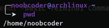
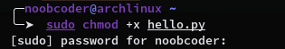

In this article you will learn about the basic terminal commands on Linux. Linux is known for its powerful commandline. Even if you don't have a GUI you can still use commandline to do all the work.
The first command is 'ls' which lists all the directories(folders) at your location.

The second command is 'pwd' which means 'print working directory'. It shows the path of the directory you are at. When you open the terminal, the default directory is /home/username
The third command is 'chmod +x filename'. It is used to give executable permissions to a file. If you ever get an error that a file is not executable, just run this command. This command can only be run as sudo, which is superuser.
The Fourth command is 'git clone reponame'. It is used to copy a github repository into your computer. It is usually used when we are installing an open-source software. For example, hollywood.

The Fifth command is 'cd directory'. It is used to go inside a folder. Lets say that we are in /home/username and we want to go inside the downloads folder. We will simply write 'cd Downloads/' to go inside the folder. To get back to your previous directory, simply type 'cd ..'

Another useful command is 'history' which shows you a list of commands you have ran. So be careful not to type your passwords in terminal as a command.

Downloading Packages
If you want to download a package or software, for example discord, there are different commands for different distributions. On Debian based distros like Ubuntu and Linux Mint its 'sudo apt install packagename'. On Fedora its 'sudo dnf install packagename'. On Arch its "sudo pacman -S packagename". So you have to run the command for your distribution.
Upgrading System
Upgrading System has the same case as downloading packages, i.e. there are different commands for different distributions. On Debian based it is 'sudo apt upgrade'. On Arch its "sudo pacman -Syu". If you are using a different distribution you can check its command.
Congratulations! You have successfully learned the basics commands of Linux terminal! :)